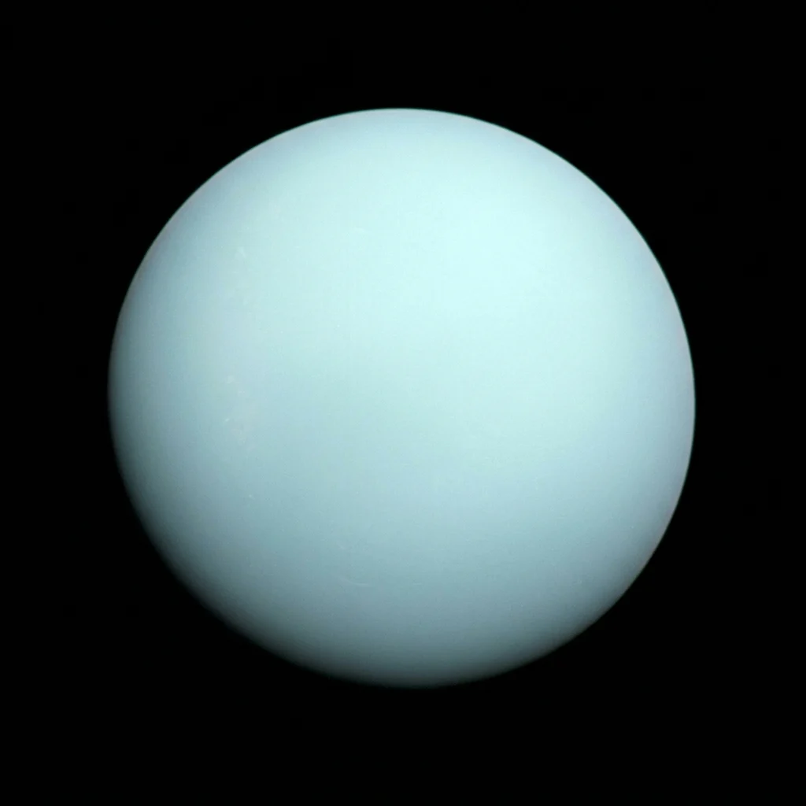

Off-Center Magnetic Field
Uranus’s magnetic axis is tilted 59° from its spin axis and offset from the planet’s center, generated inside its electrically conducting ionic water mantle.
Solar system voyage · Stop 8 of 10
A quiet-looking cloud deck conceals an unusual orientation. Uranus’s extreme tilt makes its seasons unlike ours.
19.2 AU from the Sun · mean distance, rounded
Investigate the sunlight
Spacecraft-inspired view. Images are not a live view; sizes and star positions are not to scale. Select an image to examine it with the class.
Predict first: move twice as far from the Sun. How much light reaches the same area?
distance from the Sun
sunlight per m², compared with Earth
one-way light travel from the Sun
1 AU ≈ 150 million km. Model: sunlight ∝ 1 / distance²; light takes about 8.32 minutes per AU. These are Sun-to-location values, not Earth-to-spacecraft communication times. Atmospheres, temperature, and orbital eccentricity are not modeled. NASA solar system reference · NASA planetary distance table.
How could a pole spend years facing the Sun?
Uranus’s rotation axis is tilted about 98 degrees. During part of its 84-Earth-year orbit, one pole points roughly toward the Sun.
Explain your answer using one observation from the image or lesson and one measurement from the sunlight experiment.
Planet Field Guide · Stop 8 · Ice Giant
Unlike gas giants Jupiter and Saturn, Uranus is built mostly from a hot, dense mantle of compressed water, ammonia, and methane “ices” beneath a pale cyan hydrogen-helium sky. Knocked onto a 97.8° axial tilt—likely by a giant early collision—Uranus essentially rolls around the Sun on its side.
Driving question: What happens to day, night, and seasons when a planet’s spin axis lies nearly flat in its orbital plane?
Interactive Lab · Extreme Axial Tilt
Scrub Uranus through its 84-year orbit. Because its spin axis points in a fixed direction in space, one pole stares directly into the Sun for ~42 continuous Earth years while the opposite pole endures 42 years of uninterrupted winter darkness. Toggle Earth’s 23.4° tilt to compare!
Interior Structure
Select each layer to see why “ice” in planetary science refers to chemical compounds—even when deep mantle pressures make them scorching hot.
Rings, Moons & Magnetism
Uranus’s magnetic axis is tilted 59° from its spin axis and offset from the planet’s center, generated inside its electrically conducting ionic water mantle.
Its innermost large moon Miranda shows scarred chevron terrains and Verona Rupes—a 20 km-tall ice cliff, the tallest known cliff in the solar system.
Discovered in 1977 when Uranus blocked background starlight, its thin rings orbit sideways around the planet’s tilted equator.
Spacecraft Exploration
Check Your Understanding
1. Why do Uranus’s poles experience 42 continuous years of sunlight followed by 42 years of darkness?
Choose an answer.
2. Which gas gives Uranus its pale blue-cyan hue?
Choose an answer.